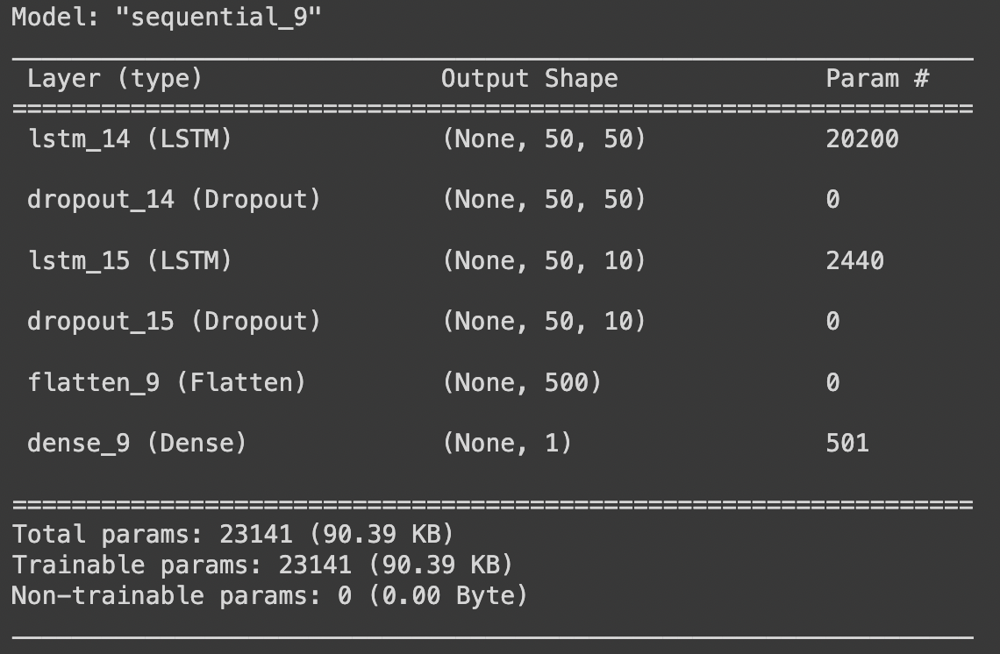
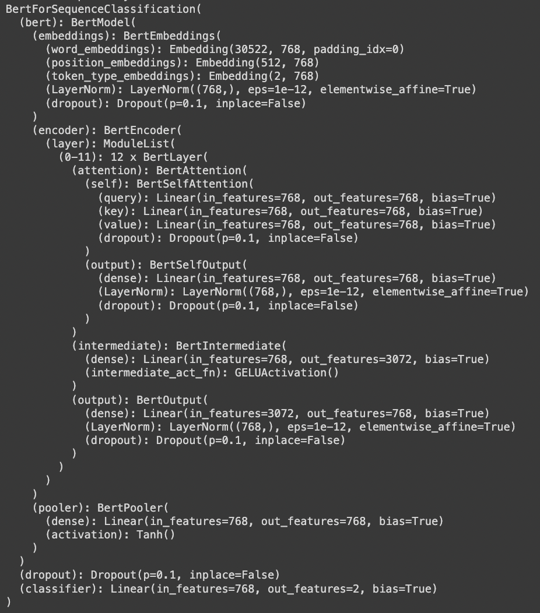
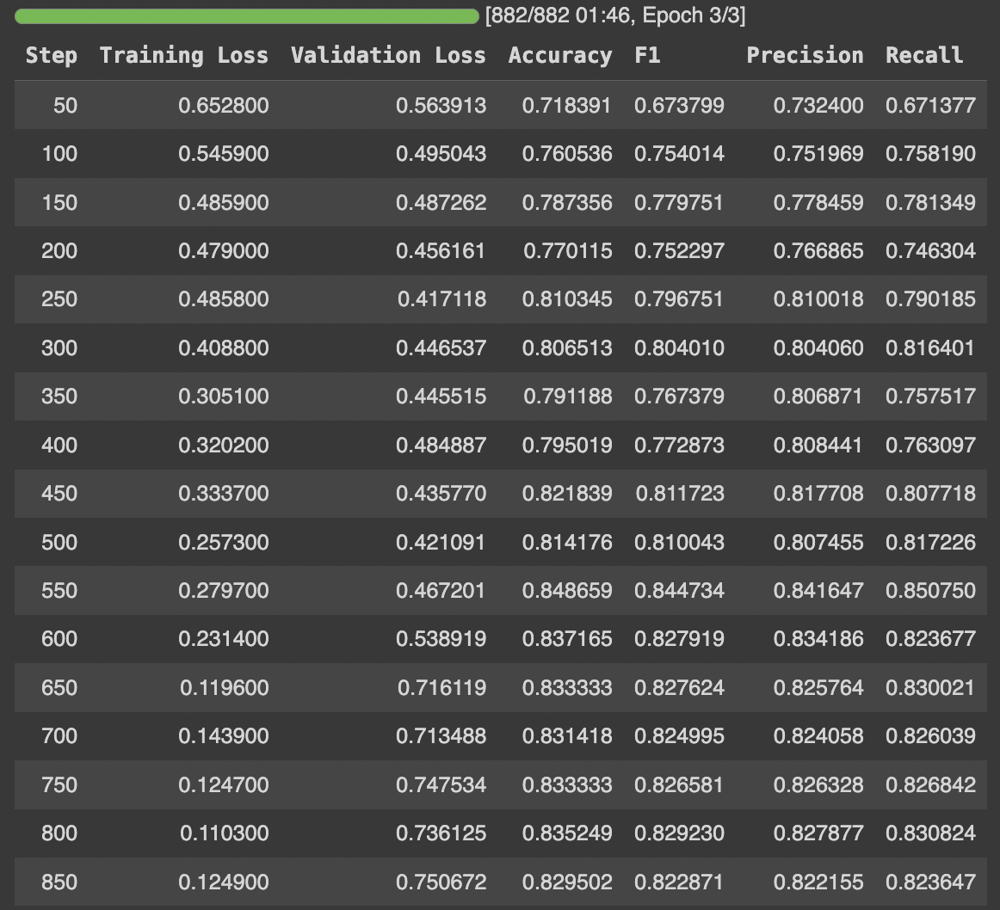
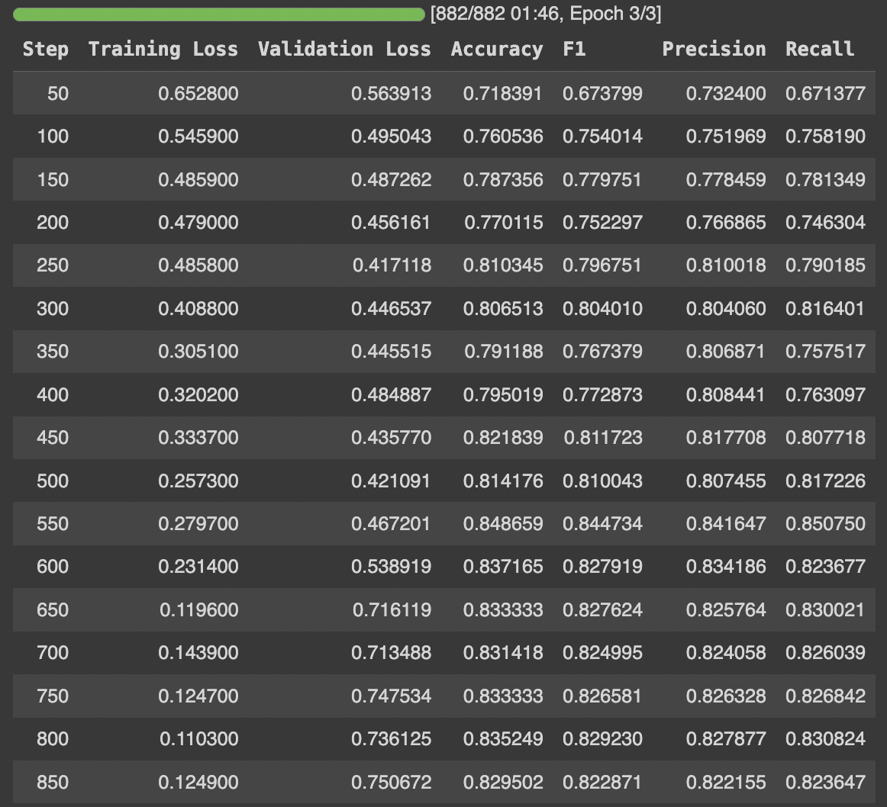

LSTM Model For Sentiment Analysis
Model Summary
An LSTM model chosen as LSTM works well with time series data. The stock prices are temporal in nature and therefore, theoritically LSTM should give good results. LSTMs also perform well in remembering relevant past information over time.
The LSTM model for sentiment classification is designed using the Keras framework. The model begins with an input layer expecting sequences of GloVe word embeddings, each with a shape of (50, 50) to accommodate the truncated and padded tweet data. Subsequently, an LSTM layer with 30 units and the 'return_sequences=True' parameter is employed to capture sequential dependencies in the input data. A dropout layer with a rate of 0.2 is added to mitigate overfitting. The output from the LSTM layer is then flattened to a one-dimensional array, and a dense layer with a single neuron and a sigmoid activation function is appended to produce a binary sentiment classification output (1 for positive sentiment, 0 for negative sentiment). The model is compiled using the Adam optimizer, making it ready for training on labeled tweet data for sentiment analysis.
BERT Model For Sentiment Analysis
Base Model
https://huggingface.co/ProsusAI/finbert FinBERT is a pre-trained NLP model to analyze sentiment of financial text. It is built by further training the BERT language model in the finance domain, using a large financial corpus and thereby fine-tuning it for financial sentiment classification. Financial PhraseBank by Malo et al. (2014) is used for fine-tuning. For more details, please see the paper FinBERT: Financial Sentiment Analysis with Pre-trained Language Models and our related blog post on Medium. The model will give softmax outputs for three labels: positive, negative or neutral.
Bert Models performs well on text data. Naturally, its popular choice to select a bert model thats already finetuned on financial data. The complex architecture should perform well on the given dataset due to the attention mechanism, positional encoding and masking.
Bert
BERT, or Bidirectional Encoder Representations from Transformers, is a powerful natural language processing (NLP) model developed by Google. It belongs to the transformer architecture, which excels in capturing contextual information from both left and right contexts in a given text. What sets BERT apart is its bidirectional training, allowing it to understand the meaning of a word based on its surrounding words in a sentence. This bidirectionality enables BERT to grasp intricate contextual nuances and relationships, making it highly effective for a variety of NLP tasks such as sentiment analysis, question answering, and text summarization. BERT is pre-trained on massive amounts of data and can be fine-tuned for specific tasks, making it a versatile and widely adopted model in the field of natural language understanding.

Fine-tuning BERT (Bidirectional Encoder Representations from Transformers) for text classification involves taking a pre-trained BERT model and adapting it to a specific text classification task. BERT is a powerful language representation model that has been pre-trained on a large corpus of text, learning contextualized word embeddings. Fine-tuning allows you to leverage this pre-trained knowledge for a specific task, such as text classification. Here are the general steps involved in fine-tuning BERT for text classification:
Fine Tune progress
Fine tune arguments
 
